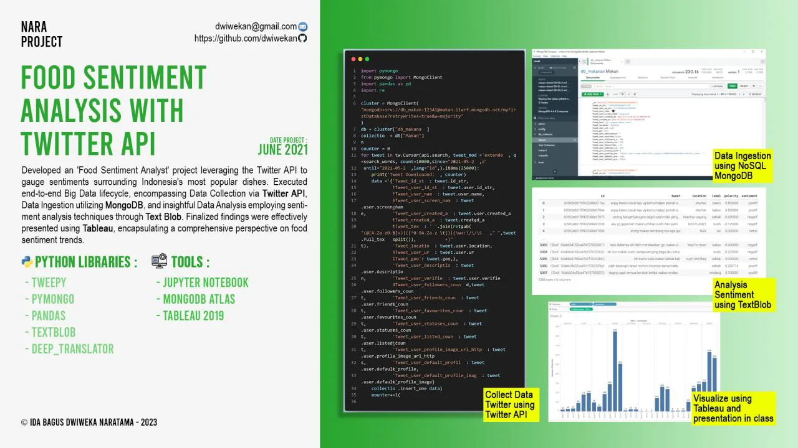

Course project, Udayana University
Food Sentiment Analysis with the Twitter API
End-to-end big-data pipeline that collects tweets about popular Indonesian dishes via the Twitter API, stores them in MongoDB, scores them with TextBlob and visualises the results in Tableau.
- Role
- Developer
- When
- Jun 2021
- Where
- Course project, Udayana University
Overview
An end-to-end big-data project measuring sentiment about Indonesia's most popular dishes. Tweets were collected with the Twitter API, ingested into MongoDB Atlas, translated and scored with TextBlob sentiment analysis, and the findings were presented in Tableau.
